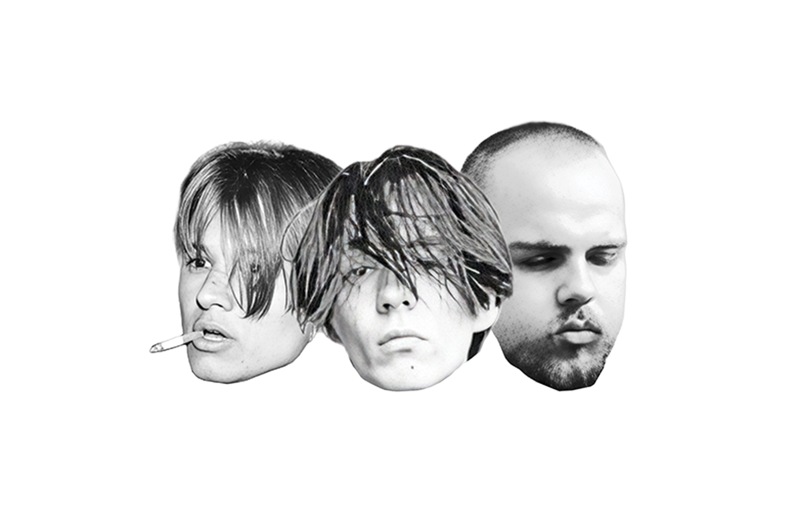
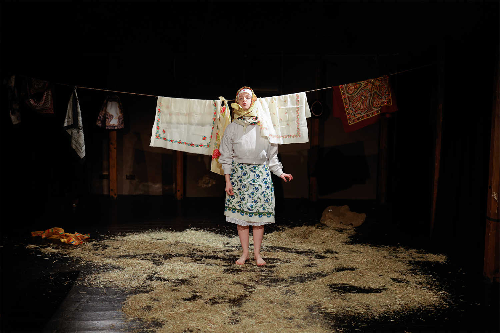

Midheaven
Midheaven is a Slovak alternative rock band founded in 2021. The project focuses on restrained arrangements, atmosphere, and emotional honesty, drawing from alternative and indie rock traditions.
Jakub Hudaček is the band’s lead vocalist and primary songwriter, contributing vocals, guitar, piano, and overall musical direction.
- Role: Vocals, Songwriting, Guitar, Violin, Piano and Production
- Notable release: Glories Streaming from Heaven (EP)

Chudaćzek
Chudaćzek is a theatre production for which Jakub Hudaček composed original music and sound design.
The work combines musical composition with atmospheric sound elements, supporting the dramatic structure and emotional tone of the performance.
- Role: Composer and Sound Design
- Medium: Theatre